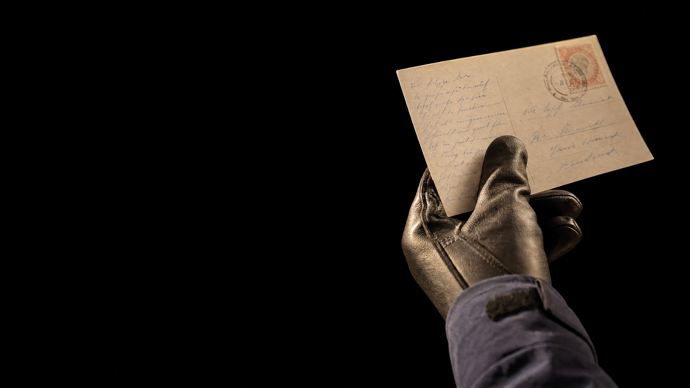
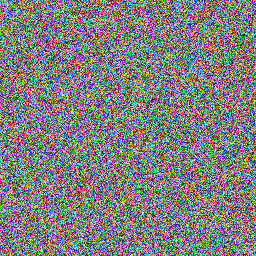
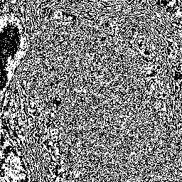
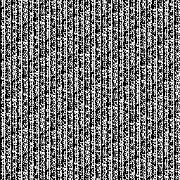

everyone on the way
reads a postcard.
image: ai-generated (gpt-image-2)
the third sensor
whatever your sensor sees, the sensor next to it sees too.
encryption as a box, twice
everyone may see the message. nobody but you may understand it.
you have seen this gate
xor: 1 when the two differ. that is all we need.
xor with a key byte
where the key has a 1, the bit flips. the result looks like any old byte.
do it again, get it back
encrypt and decrypt are the same operation with the same key.
the key of all zeros
key 0000 0000: nothing flips.
the program runs, the transmission works, and you are sending plaintext without noticing. look at the bytes that actually go out.
what it looks like in the file
same length, same number of bytes, not one of them readable.
try it: scramble your own text
your spec may say xor. it must not say the key.
the method: public. every team reads it, and that is fine.
the key: secret. it is the only thing that must be.
kerckhoffs, 1883. your browser encrypts with methods from the textbook.
one byte of key: 256 tries
looking like noise is not the same as being noise.
why longer is better
every byte of key multiplies the work by 256. that is why keys are long.
a billion tries a second: the order of one graphics card
your password is a key
length beats symbols. and a word from a list is no key at all.
same billion tries a second · check your own on haveibeenpwned.com
three bytes of key, and the parrot is still there
raw
196 608 bytes, what you want to send
xor with 5a c3 96, repeated
what the neighbours display
encrypted is not the same as unrecognisable.
real files, 256 × 256 points · parrot: ai-generated (gpt-image-2)
why the pattern survives
a short key treats equal bytes equally. the picture keeps its shape.
a key as long as the picture, used once
three bytes, repeated
65 536 times

196 608 random bytes, used once
nothing repeats, nothing shows
now it is noise. provably. and it has a price.
real files, 256 × 256 points · parrot: ai-generated (gpt-image-2)
how the key gets to your partner
the key must travel. and it must not travel on the link.
strangers: a padlock instead of a slip of paper
a lock anyone can shut and only one can open: the secret travels locked, the key never travels.
diffie and hellman, 1976
flipped bits go straight through
a key keeps others from reading. it does not keep bits from changing.
what stays in the clear
encrypt the content. the frame around it has a job to do.
pack first, then lock
encrypted bytes have no redundancy left. pack before you lock.
measured 14 sept 2026, python zipfile level 9, one-time key on the raw parrot
hide it in the parrot
the parrot
196 608 bytes
the parrot + 24 576 characters of hidden text
196 608 bytes, 98 556 of them changed by exactly 1
not scrambled. hidden, in the bit nobody looks at.
real files, 256 × 256 points · parrot: ai-generated (gpt-image-2)
the lowest bit, made visible

lowest bit of red, original
noise with traces of the picture

the same bit with the text inside
the stripes of ascii, to the naked eye
256 × 256 × 3 = 196 608 values · 1 bit each · ÷ 8 = 24 576 characters
whoever knows where to look reads it in a blink. hidden is not secret.
hidden is not secret. secret is not hidden.
encryption: everyone sees a message, nobody can read it.
steganography: nobody sees a message, anyone who looks can read it.
want both? encrypt first, then hide. the finder reads noise, and noise was there before.
today
1 light is public. the key is what protects the content.
2 xor with the key, twice, and the message is back.
3 the method may be known. the key must not, and it must be long.
4 the key needs a second path: a table, or a padlock.
5 a key stops reading, not changing: keep the checksum. pack first, then lock.
readable by everyone.
understood by one.
image: ai-generated (gpt-image-2)